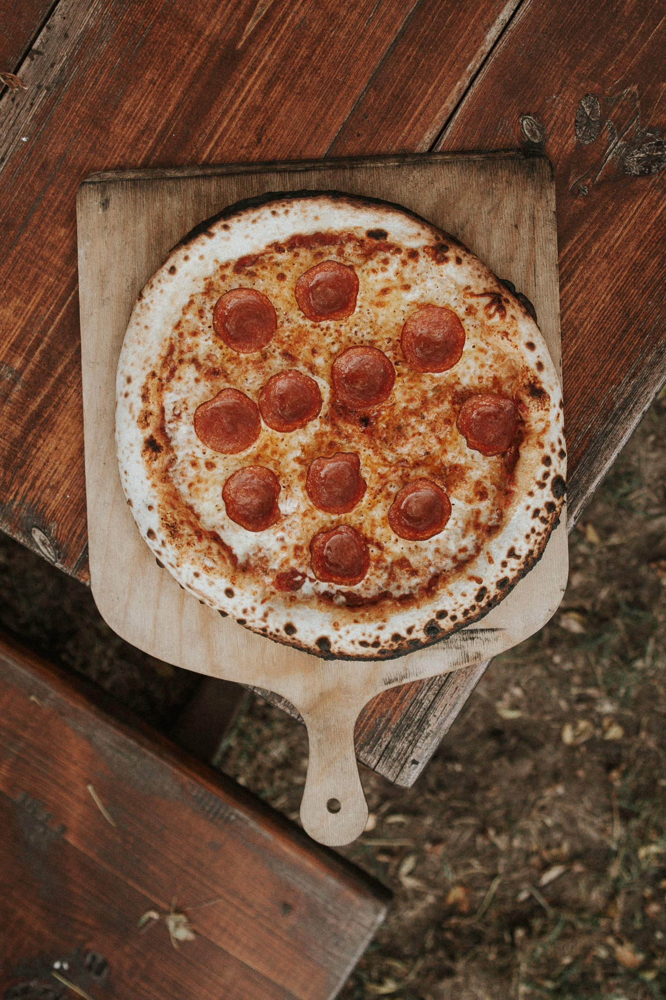

Pepperoni Pizza

Description
Made of pizza crust, pizza sauce, cheese, and pepperoni. Pepperoni is basically an American version of salami.
Pepperoni is a meat mixture of beef and pork that has been cured and seasoned with paprika and chili powder.
Ingredients
- Biga Dough (Pizza size-12 inches)
- 600 gram Flour
- 10 gram Yeast
- 410 ml Warm Water
- 5 gram Honey
- 10 gram Salt
For Pizza Sauce:
- 80 gram Rosso tomato Pelati
- 5 ml Extra virgin olive oil
- 1 tsp Chopped fresh oregano
- 1 tsp Chopped fresh basil
- 1 gram Salt/pepper
- 10 gram Garlic
For Toppings:
- 10 gram Pepperoni (sliced)
- 90 gram Fresh mozzarella
- 80 gram Tomato sauce
Steps
- Stir the yeast into the warm water and let it stand until it turns creamy for about 10 minutes.
-
Stir the remaining water into the creamy yeast mixture, and then stir it in the flour, honey and
salt, one cup at a time. Stir the mixture with a wooden spoon for 3 to 4 minutes. Beat with the
paddle until it forms a sticky dough.
-
Transfer the biga to a lightly oiled bowl, cover it with a plastic wrap, and let it rest at room
temperature for 24 hours, until the starter is triple its original volume.
-
Cover and refrigerate the biga dough until it is ready to use. Let it rest at a room temperature
for about 3 hours until it is bubbly and active again. Scoop out the desired amount of biga for
your recipe and proceed.
Pizza Assemble:
- Preheat the Pizza oven to 280 degrees. Roll and stretch the dough to a 12-inch round, while creating
a rim along the edge of the dough.
- Brush olive oil over the edges of pizza, then evenly spread about 2/3 cup of the pizza sauce over pizza
(leaving rim uncoated).
- Top evenly with cheese and pepperoni slices; bake 12 - 15 minutes until crust is golden. Remove from oven,
cut it into slices.